1. Purpose
A customer order is the anchor a planner works from all day, but the data that actually belongs to it is spread across a dozen tables (see the ER model). This page gives the planner-facing view of the same information: what does one order actually carry, without the database column names. It exists specifically to inform the three view proposals on this page's companion wireframes (Section 3 below), which are alternative ways to present exactly this data.
2. What Hangs Off One Customer Order

Source: customer-order-data-overview.mmd. Regenerate with:
npx @mermaid-js/mermaid-cli -i docs/customer-order-data-overview.mmd -o docs/customer-order-data-overview.svg -b white
- Weekly note & waiting-for-customer flag are the only two fields a planner types directly onto the order — everything else below is either structural (created once) or derived (computed from activity status), per the Single Source of Truth principle (SRS BR-001).
- Status (overall and per-discipline) is never stored; it is computed from the status of the order's test activities every time it's displayed.
- Milestones and customer visits are dated entries a planner adds as they become known.
- EUTs split an order into its physical units under test, when there's more than one; a test activity can also skip the EUT and belong to the order directly, for simple single-unit orders.
- Test activities are the actual work items (RE, CE, ESD, report writing, etc.) — each one carries its own resource assignments, change history, work order lifecycle, and (once run) test report.
- Conflict flag surfaces when a currently in-progress activity is double-booked on a shared lab/piece of equipment with another order's activity (Phase 9).
3. Three Proposals for Presenting This to the Planner
Since these wireframes were written, the data described in Section 2 above has also been consolidated into a real, working single-page order workspace (Phase 16) - create a customer order and maintain every EUT, test activity, dependency, planned date, resource allocation, milestone, and customer visit that hangs off it, without switching tabs. Reachable via Planner → Order Workspace, or the "Workspace" link on any existing order. The wireframes below remain the original design-comparison record.
The current Planner page (planner_orders.html) spreads this across five tabs (Customer orders, EUTs, Ordered tests, Resource assignment, Schedule). These three wireframes are alternative ways to give the planner the overview and let them work with an order's data, for comparison against the current tabbed layout and each other:
- Option A — Expandable order list: one flat, scannable list of every order; expand a row in place to see its EUTs and activities without leaving the list.
- Option B — Status-grouped cards (Kanban-style): one card per order, grouped into columns by its derived status — a pipeline view closer to the customer's original Sprint.xls mental model.
- Option C — Master-detail (two-pane): a slim order list on the left, full single-order detail on the right — for a planner working deeply on one order at a time.
All three are static wireframes (dummy data, no working links/forms) meant to compare layout concepts, not finished designs; see each page's own Purpose section for its specific trade-offs.